The new interface focus on bringing a brand new design, making it easier to read and less cumbersome to navigate.
We reworked all our icons to be more explicit. We also reworked our color scheme which should now be more consistent.
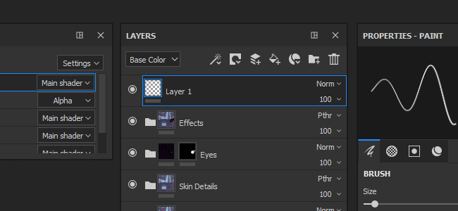
Substance Painter 2018.1 introduces a brand new interface with a lot of improved behaviors. Performances have been improved as well in a lot of areas.
Release date : 15 March 2018
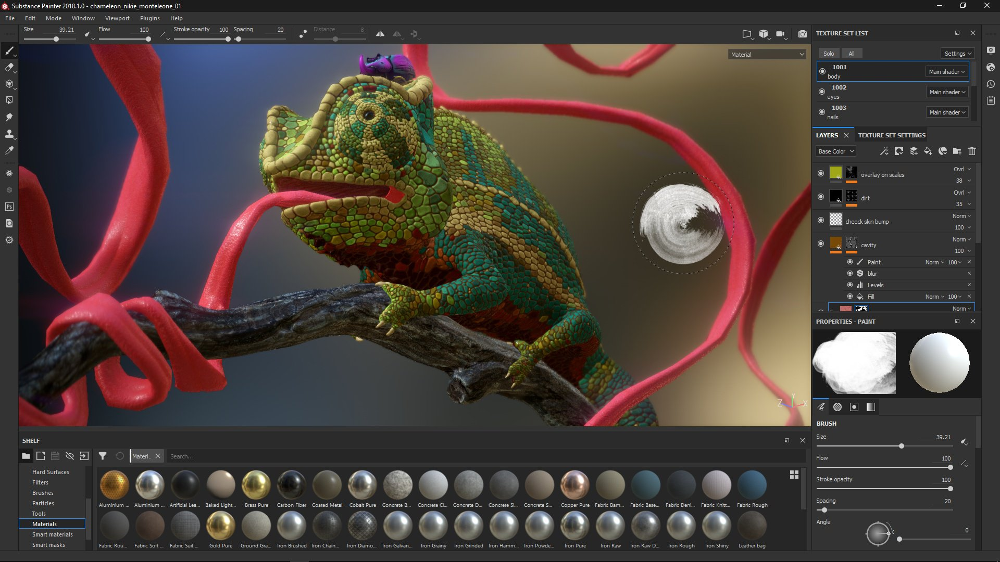
Substance Painter 2018.1 introduces a complete rework of the interface, ranging from color and icons to widget behaviors.
The new interface focus on bringing a brand new design, making it easier to read and less cumbersome to navigate.
We reworked all our icons to be more explicit. We also reworked our color scheme which should now be more consistent.

We improved many widgets, especially our sliders, to be more easy to use with a Tablet Pen.
You can click on the bar to move the slider or use the value field to more precisely edit the numbers.
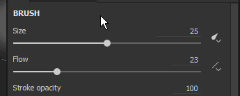
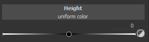
We have a new toolbar that allows to open Docks on the fly.
Clicking on one of the buttons in the toolbar will display the Dock next to its button and floating above the rest of the interface, re-clicking on the button will close it.
If the dock move away from its button, it becomes a regular floating window which can be docked in the interface. If closed, the button will be available again in the Dock Toolbar.
This new dock system works more easily with fullscreen. There is no need to have every dock always present in the interface anymore.

Docks now use our new Tab layout which organise items into sections while still being able quickly scroll inside it.
This Tab layout allows big windows and can present all the information at the same time, contrary to regular Tab systems that hide information.
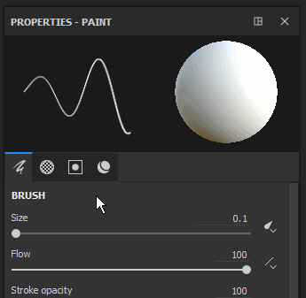
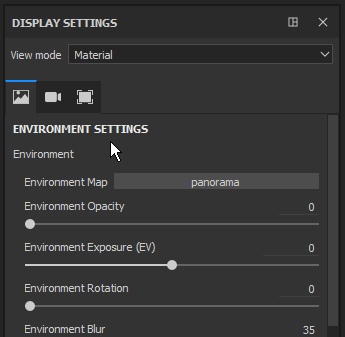
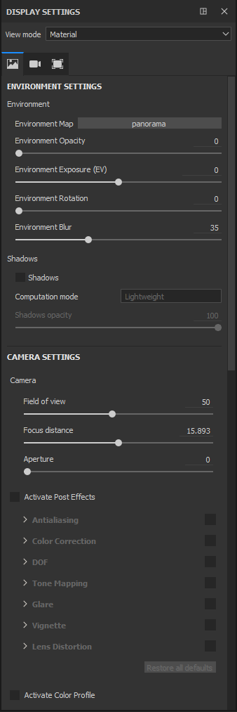
There is now a Quick Menu, which makes Tool properties available directly in the viewport.
To open the quick menu, simply right-click in the viewport. To close the quick menu, click again in the viewport.
The menu will only close when clicking into the viewport, allowing the drag and dropping of resources from the shelf directly into the quick menu.
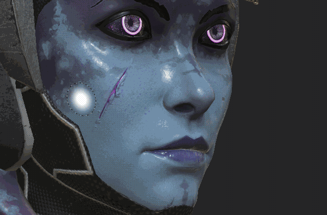
There is now a new Contextual Toolbar at the top for the viewport.
This toolbar change its parameters depending of the current tool used. It's a way to quickly access basic tool features (like the brush size).
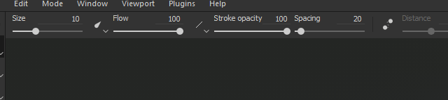
It is now possible to reorder effects using drag and drop in the layer stack.
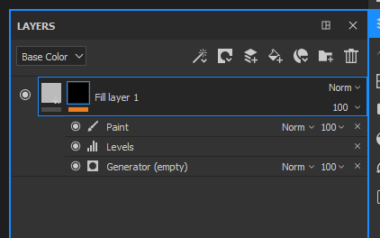
While the shortcuts "C" and "B" allow you to quickly vizualise the Channel and Baked textures into the viewport, it is now possible to use the unified dropdown to change the viewport display.
At the top right of the viewport there is now a dropdown listing all the Channels and Mesh maps (previously Additional maps). This unified dropdown is also available in the Display Settings dock.
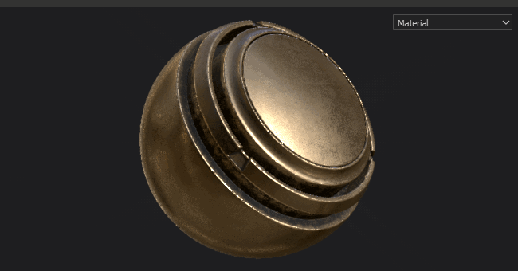
The Display Settings and Viewer Settings have been merged into a single Dock.
Environment, Camera and Viewport settings are now grouped together, while Shaders parameters have been moved into a dedicated Dock instead.
The Display Settings now takes advantage of the new Tab layout to quickly navigate the window.
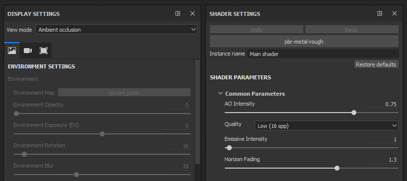
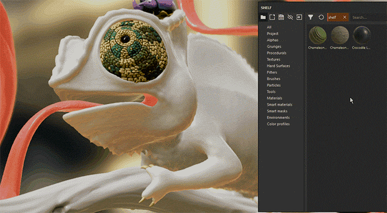
You can now drag and drop Materials and Smart Materials directly into the viewport.
This new action will highlight the geometry of the of the target Texture Set at the same time. This action will create the new layers at the top of the layer stack of the Texture Set.
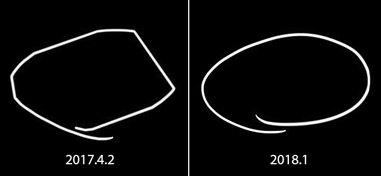
In this version we improved the way we handle Graphics tablet pen movements and inputs, especially when Substance Painter is under a heavy load.
We no longer lose the inputs anymore while we are doing consecutive computations. This should allow precise brush strokes in any situations.
We reworked the way we generate our padding outside the UV islands. Instead of taking the current pixel and dilating it on a certain distance we now look for the neighboring pixel on the other side of the UV seam and interpolate the two values.
This gives a much better end result and reduce the visibility of the split between UV islands even when the textel ratios don't match.
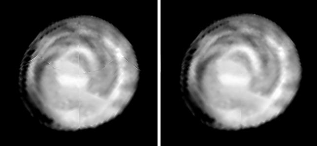
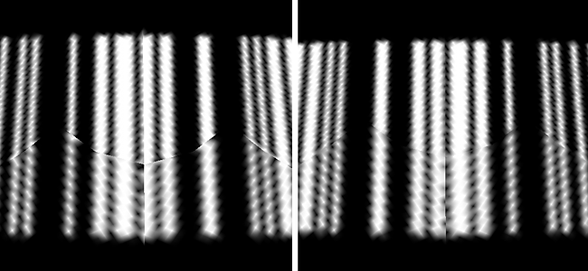
This new padding is automatically generated after each brush stroke, resolution change or layer modification.
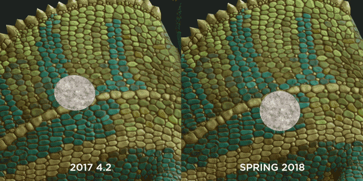
We also improved performances in this version on multiple levels :
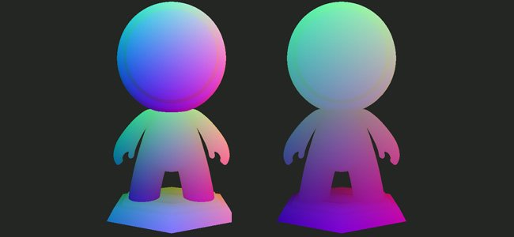
We now have a new setting that allows to bake a position map per Texture Set that take into account the full scene size.
This new behavior allows to use triplanar projections in Mask Generators that will match across the whole scene instead of creating seams like before. This is really usefull with projects that have a lot of Texture Sets (like UDIM based projects).
In the position baker settings, change the the parameter "Normalization Scale" from "Per Material" to "Full Scene" to enable this new behavior.
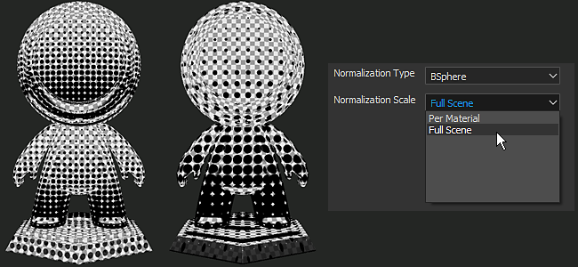
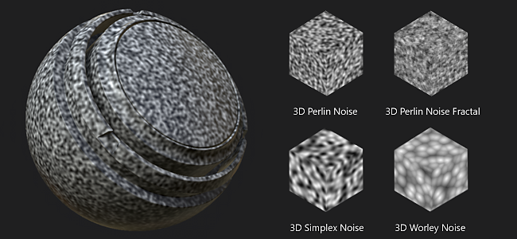
We also added some new content in this release :
Non-square noises
The base noises have been updated to the latest version from Substance Designer.
This means that the non-square expansion feature is now available in the noise parameters.
Create the mask generator 3D Linear gradient in one of your layer
Switch the viewport display to "Position" (via the viewport dropdown or by using the "B" key)
Click on the "3D Position Start" parameter to open the Color Picker pop-up
Pick a color on your mesh in the viewport
Repeat the process for the second parameter "3D Position End"
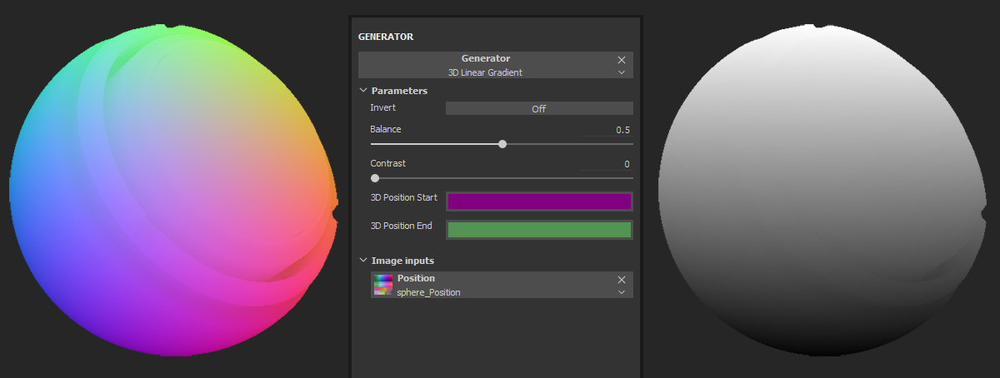
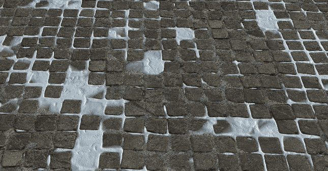
There is now a new sample project named "TilingMaterial" that you can open via the "File > Open Sample" menu action.
This project use a simple plane mesh with overlapping UVs which allows to paint seamlessly materials and brush strokes to create tiling materials.
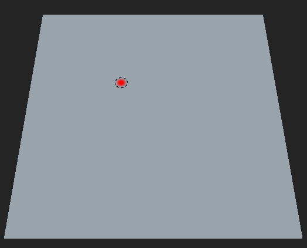
A new tutorial course has been added to Substance Academy to cover our new interface : Getting started with substance painter 2018
(Released June 28, 2018)
Added:
Fixed:
Known Issues:
(Released June 6, 2018)
Added:
Fixed:
Known Issues:
(Released April 3, 2018)
Fixed:
Known Issues:
(Released March 15, 2018)
Added:
Fixed:
Known Issues: